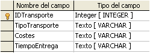
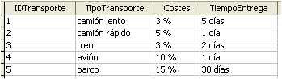

3.5. Relaciones
|
La estructura básica de almacenamiento de datos en una base es la tabla.
Cada tabla tiene a su vez, una estructura distinta de las otras tablas.
Sin embargo, OOo Base permite trabajar con datos de varias tablas en consultas, formularios e informes. Esto es posible gracias a las conexiones que se establecen entre las tablas, denominadas relaciones.
|
 |
|
Relaciones entre tablas |
Importante
Una relación es un vínculo entre campos de tablas distintas que describe una interacción entre los mismos.
Las relaciones permiten simplificar la estructura de las tablas y la repetición de ciertos valores en todos los registros de una tabla.
Los tipos de relaciones en OOo Base son: uno a muchos, muchos a muchos y uno a uno.
Tipos de relaciones
Ya has estudiado genéricamente las relaciones. En este apartado verás las que permite OOo Base y la forma de establecerlas.
| Uno a muchos | Un registro de la tabla de origen puede relacionarse con varios registros de la segunda tabla. La relación no es reversible, sólo se da en esta dirección (tabla origen a tabla destino). |
| Muchos a muchos | Varios registros de la tabla origen pueden relacionarse con varios registros de la segunda tabla y viceversa. Varios registros de la tabla de destino pueden relacionarse con registros de la tabla de origen. |
| Uno a uno | Un registro de la tabla de origen se relaciona con un solo registro de la segunda tabla. Es la menos frecuente y se usa para que el número de campos de una tabla no sea excesivo. |
Comprueba lo aprendido
Escribe qué tipo de relación es la más adecuada: a) uno a muchos; b) muchos a muchos; c) uno a uno.
(Escribe sólo a, b, c).
Establecer relaciones
El panel en el que se crean las relaciones se abre en el menú Herramientas→Relaciones.
| En esta pantalla se pueden añadir a la relación las tablas necesarias mediante el icono Agregar tablas. | |
| Las tablas seleccionadas aparecerán en ventanas con todos sus campos visibles. El siguiente paso es definir la relación haciendo clic en el icono Nueva relación. |
La mejor forma de explicar el proceso de trabajo es utilizar ejemplos prácticos.
Un ejemplo sencillo es utilizar una tabla para almacenar los tipos de transporte de los pedidos y sus costes. Cada tipo estará identificado por un campo llave primaria. Basta introducir el identificador del tipo de transporte en la tabla pedidos y no el resto de campos.
Caso práctico
Relación uno a muchos
|

|

|
| Diseño tabla Transporte | Datos tabla Transporte |
Para saber más
Relación muchos a muchos
Relación uno a uno
Esta relación no se usa para simplificar datos que se repiten continuamente en tablas o para establecer relaciones múltiples. ¿Cuál podría ser un buen ejemplo de su utilización en el campo empresarial?
- Un buen ejemplo es la división de tablas en dos para simplificarlas relacionando dos campos uno a uno.
- Otro ejemplo podría ser aislar una parte de la tabla por seguridad, por ejemplo, el número de cuenta bancaria de un cliente o datos confidenciales.
- En tercer lugar y en el sentido opuesto al anterior, es útil esta relación para dividir la tabla en dos cuando hay datos que son efímeros y permitir, así, que se eliminen con facilidad borrando la segunda tabla.